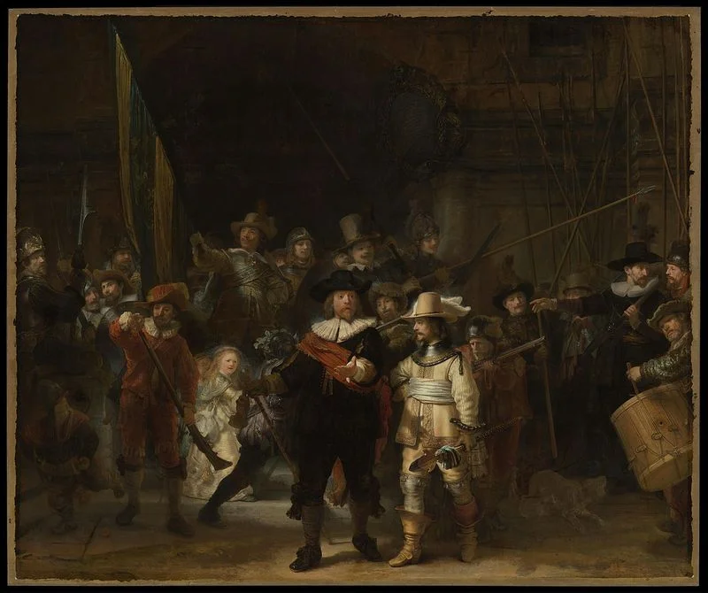
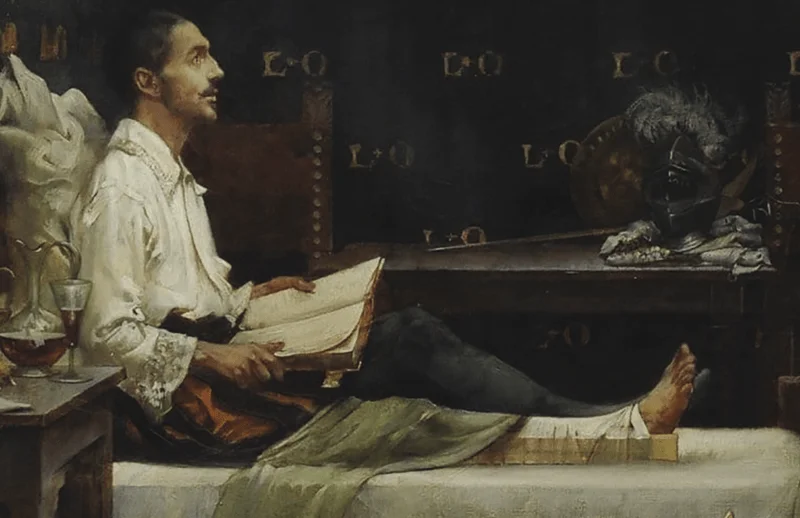
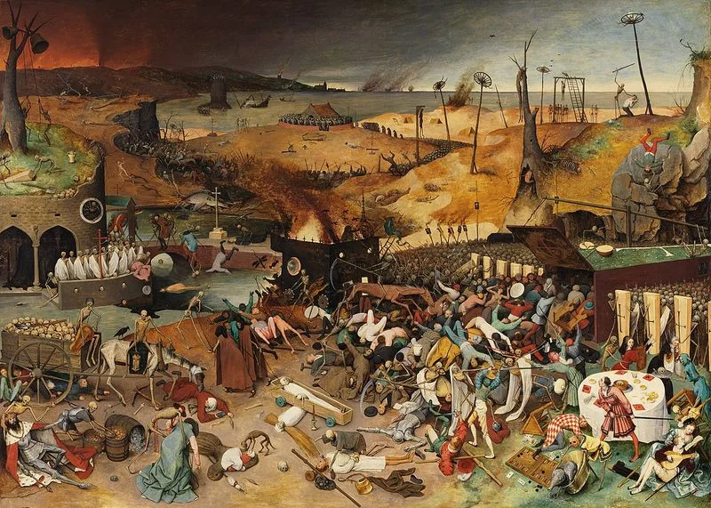

First published on Dec 20, 2021

Too Loud a Solitude by Bohumil Hrabal is a truly wonderful piece of writing. The simple dust jacket description would go something like "it tells the story of Hanta, an elderly man who works as a paper crusher. He uses the time on his job to read, preserve and pay tribute to classic, rare and banned books of Literature, Philosophy and Art."
It is only 112 pages long and I would encourage anybody to spend an afternoon reading it. Very few books have brought me as much joy in so few words.
One of the most delightful aspects is the regular referencing of various classic books. Some I had heard of and others were new to me. The quality of these works is outstanding and going through just the listed titles, let alone the complete works of the various authors, would be an education far surpassing any offered by a modern university.

Listed below are all the named works in order of apperance:
There are many, many works based on the classic German legend but this reference is most probably the play by Johann Wolfgang von Goethe published in 1808.
A five act tragedy written in the 1780s based on historical events in 16th Century Spain by Friedrich von Schiller.
Similar to Faust the author is not explicitly listed and could be one of many, however other references to Hölderlin would suggest this particular work. Like almost all the books listed, it has strong philosopical undertones and deals with love, death and beauty.
Nietzsche's most famous work, published in 1883 - it is neither fiction nor non-fiction; an enigmatic look at life and what it means to live.
More commonly known in English languages as Tao Te Ching. An iconic book of Eastern philosophy that aims to teach one how to live with goodness and integrity.
A satirical essay by Desiderius Erasmus from 1511 attacking what he saw as the flaws of the Church and European society at large.
The final book by Nietzche that mostly deals with his reflections on his work and life as well as grappling with what a modern philosopher should be.
A classic text by Immanuel Kant dealing with both rights and virtues from 1797.
A book on astronomy and Kant's ideas and research on our Solar System and beyond. Much of the content has held up far better than similar works of the same time.
An autobiographical account of the first solo trans-Atlantic flight in 1927 by Charles Lindbergh
Seneca's ideas on how to cure diseases of the mind such as anxiety, worry and and stress. A classic Stoic text.
A significantly lesser known work also referred to as 'The Wax Persona'. Research is further complicated by the multiple spellings of the author's name. The short novella delves into his views and opinions on the evolution of literature and historical context for progress. A strong knowledge of Russian history is necessary to appreciate the true extent of the impressive tale.
Also know as the Book of Sirach or simply Sirach, the Book of Ecclesiasticus consists of ethical Hebrew teachings that resemble proverbs.
A romantic poem that has become one of the most famous Czech literary works with over 250 editions published.

To have read, digested and understood the fourteen books above would be a fine, fine education. Additionally there are over 45 over names mentioned; artists, authors, poets, philosophers and politicians. From Aristole to Gaugin, from Sartre to Hieronumus Bosch; Too Long a Solitude is a springboard to rabbit holes of artistic brilliance. A full list of all the people referenced can be found here.
If you have read Too Loud a Solitude, feel free to send me an email with your thoughts, theories and feelings.